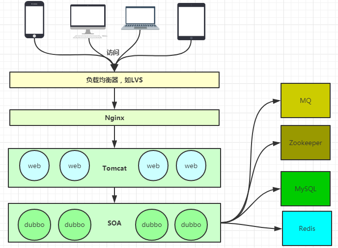

nginx¶
架构¶
web¶

nginx¶
以daemon方式后台运行一个master和多个worker。
Master¶
- 读取并验证配置文件nginx.conf
- 管理worker进程
Worker¶
每一个Worker进程都维护一个线程（避免线程切换），处理连接和请求。
Note
Worker进程的个数一般和CPU个数一致。
应用场景¶
正向代理¶
内网请求访问外网服务。
1 2 3 4 5 6 7 8 9 10 | server {
# 指定DNS服务器地址
resolver 1.1.1.1;
# 指定代理端口
listen 8080;
location / {
# 设定代理服务器的协议和地址（固定不变）
proxy_pass http://$http_host$request_url;
}
}
|
使用示例：curl --proxy proxy_server:8080 http://www.taobao.com/
透明代理¶
拦截内网客户端访问外网的数据和信息。隐藏自己。
反向代理¶
接收外网客户端请求，转发给内网服务器。隐藏内网服务器。可实现通过 子域名映射到多个内网服务器 端口。
1 2 3 4 5 6 7 8 9 10 11 12 13 14 15 16 17 18 19 20 21 22 23 24 25 26 27 | server {
# 监听端口
listen 80;
# 服务器名称（外网客户端访问的域名）
server_name a.xxx.com;
# nginx日志输出文件
access_log logs/nginx.access.log main;
# nginx错误日志输出文件
error_log logs/nginx.error.log;
# web服务根目录
root website;
index index.html index.htm index.php;
# 设置多个location映射到不同的path，如location /xxx, location /yyy/zzz
location / {
# 被代理的服务器地址（内网服务器地址和端口）
proxy_pass http://localhost:8081;
# 对发送给客户端的URL进行修改操作
proxy_redirect off;
proxy_set_header Host $host;
proxy_set_header X-Real-IP $remote_addr;
proxy_set_header X-Forward-For $proxy_add_x_forwarded_for;
proxy_next_upstream error timeout invalid_header http_500 http_502 http_503 http_504;
proxy_max_temp_file_size 0;
}
}
|
Tip
可以进行IP访问控制。
负载均衡¶
将外网客户端请求按照规则分发给多个内网服务器。
- 轮询，默认方式
1 2 3 4 5
upstream serverList { server 1.1.1.1; server 1.1.1.2; server 1.1.1.3; } - ip_hash，解决session问题
1 2 3 4 5 6
upstream serverList { ip_hash server 1.1.1.1; server 1.1.1.2; server 1.1.1.3; } - url_hash
1 2 3 4 5 6 7
upstream serverList { server 1.1.1.1; server 1.1.1.2; server 1.1.1.3; hash $request_uri; hash_methor crc32; } - fair, 按后端服务器响应时间短优先分配
1 2 3 4 5 6 7
upstream serverList { ip_hash server 1.1.1.1; server 1.1.1.2; server 1.1.1.3; fair; }
server后携带参数：
- down: 不参与负载
- weight: 权重越大，负载量越大
- max_fails: 允许请求失败次数，默认为1
- fail_timeout: max_fails次失败后暂停时间
- backup: 备份机，只有其他所有非backup机器down或忙时才请求backup机
示例配置：
1 2 3 4 5 6 7 8 9 10 11 12 13 14 15 16 17 18 19 20 21 22 23 | upstream serverList {
server 1.1.1.1;
server 1.1.1.2;
server 1.1.1.3;
}
server {
# 监听端口
listen 80;
# 服务器名称（客户端访问的域名）
server_name www.xxx.com;
# web服务根目录
root website;
index index.html index.htm index.php;
location / {
# 被代理的服务器地址
proxy_pass http://serverList;
# 对发送给客户端的URL进行修改操作
proxy_redirect off;
proxy_set_header Host $host;
}
}
|
静态服务器¶
1 2 3 4 5 6 7 8 9 10 | server {
listen 80;
server_name www.xxx.com;
client_max_body_size 1024M;
location / {
# 指定静态资源根目录
root /var/www/xxx_static;
index index.html;
}
}
|
动静分离
- 静态资源放到Nginx上，由Nginx管理
- 动态请求转发给后端
管理命令¶
- 查看版本：
nginx -v - 启动停止：
/etc/init.d/nginx start, stop - 编辑配置文件：
/etc/nginx/nginx.conf
nginx配置¶
参考模板
1 2 3 4 5 6 7 8 9 10 11 12 13 14 15 16 17 18 19 20 21 22 23 24 25 26 27 28 29 30 31 32 33 34 35 36 37 38 39 40 41 42 43 44 45 46 47 48 49 50 51 52 53 54 55 56 57 58 59 60 61 62 63 64 65 66 67 68 69 70 71 72 73 74 75 76 77 78 79 80 81 82 83 84 85 86 87 88 89 90 91 92 93 94 95 96 97 98 99 100 101 102 103 104 105 106 107 108 109 110 111 112 113 114 115 116 117 118 119 120 121 122 123 124 125 126 127 128 129 130 131 132 133 134 135 136 137 138 139 140 141 142 143 144 145 146 147 148 149 150 151 152 153 154 155 156 157 158 159 160 161 162 163 164 165 166 167 168 169 170 171 172 173 174 175 176 177 178 179 180 181 182 183 184 185 186 187 188 189 190 191 192 193 194 195 196 197 198 199 200 201 202 203 | # 配置用户或者组，默认为nobody nobody。
user administrator administrators;
# 允许生成的进程数，默认为1
worker_processes 2;
# 指定nginx进程运行文件存放地址
pid /nginx/pid/nginx.pid;
# 指定错误日志路径，级别。这个设置可以放入全局块，http块，server块，级别依次为：debug|info|notice|warn|error|crit|alert|emerg
error_log log/error.log debug;
# 工作模式及连接数上限
events {
# 设置网路连接序列化，防止惊群现象发生，默认为on
accept_mutex on;
# 设置一个进程是否同时接受多个网络连接，默认为off
multi_accept on;
# 事件驱动模型，select|poll|kqueue|epoll|resig|/dev/poll|eventport
use epoll;
# 单个work进程允许的最大连接数，默认为512
worker_connections 1024;
}
# http服务器
http {
# 文件扩展名与文件类型映射表。设定mime类型(邮件支持类型)，类型由mime.types文件定义
include /usr/local/etc/nginx/conf/mime.types;
# 默认文件类型，默认为text/plain
default_type application/octet-stream;
# 取消服务访问日志
#access_log off;
# 自定义日志格式
log_format myFormat '$remote_addr–$remote_user [$time_local] $request $status $body_bytes_sent $http_referer $http_user_agent $http_x_forwarded_for';
# 设置访问日志路径和格式。"log/"该路径为nginx日志的相对路径，mac下是
# /usr/local/var/log/。combined为日志格式的默认值
access_log log/access.log myFormat;
rewrite_log on;
# 允许sendfile方式传输文件，默认为off，可以在http块，server块，location块。
#（sendfile系统调用不需要将数据拷贝或者映射到应用程序地址空间中去）
sendfile on;
# 每个进程每次调用传输数量不能大于设定的值，默认为0，即不设上限。
sendfile_max_chunk 100k;
# 连接超时时间，默认为75s，可以在http，server，location块。
keepalive_timeout 65;
# gzip压缩开关
#gzip on;
tcp_nodelay on;
# 设定实际的服务器列表
upstream mysvr1 {
server 127.0.0.1:7878;
# 热备(其它所有的非backup机器down或者忙的时候，请求backup机器))
server 192.168.10.121:3333 backup;
}
upstream mysvr2 {
# weigth参数表示权值，权值越高被分配到的几率越大
server 192.168.1.11:80 weight=5;
server 192.168.1.12:80 weight=1;
server 192.168.1.13:80 weight=6;
}
upstream https-svr {
# 每个请求按访问ip的hash结果分配，这样每个访客固定访问一个后端服务器，可以
# 解决session的问题
ip_hash;
server 192.168.1.11:90;
server 192.168.1.12:90;
}
# error_page 404 https://www.baidu.com; # 错误页
# HTTP服务器
# 静态资源一般放在nginx所在主机
server {
listen 80; # 监听HTTP端口
server_name 127.0.0.1; # 监听地址
keepalive_requests 120; # 单连接请求上限次数
# 设置server里全局变量
set $doc_root_dir "/Users/doing/IdeaProjects/edu-front-2.0";
#index index.html; # 定义首页索引文件的名称
# 请求的url过滤，正则匹配，~为区分大小写，~*为不区分大小写。
location ~*^.+$ {
root $doc_root_dir; # 静态资源根目录
proxy_pass http://mysvr1; # 请求转向“mysvr1”定义的服务器列表
#deny 127.0.0.1; # 拒绝的ip
#allow 172.18.5.54; # 允许的ip
}
}
# http
server {
listen 80;
# 监听基于域名的虚拟主机。可有多个，可以使用正则表达式和通配符
server_name www.helloworld.com;
charset utf-8; # 编码格式
set $static_root_dir "/Users/doing/static";
# 反向代理的路径（和upstream绑定），location后面设置映射的路径
location /app1 {
proxy_pass http://zp_server1;
}
location /app2 {
proxy_pass http://zp_server2;
}
# 静态文件，nginx自己处理
location ~ ^/(images|javascript|js|css|flash|media|static)/ {
root $static_root_dir;
expires 30d; # 静态资源过时间30天
}
location ~ /\.ht { # 禁止访问 .htxxx 文件
deny all;
}
location = /do_not_delete.html { # 直接简单粗暴的返回状态码及内容文本
return 200 "hello.";
}
# 指定某些路径使用https访问(使用正则表达式匹配路径+重写uri路径)
# 路径匹配规则：如localhost/http、localhost/httpsss等等
location ~* /http* {
# rewrite只能对域名后边的除去传递的参数外的字符串起作用，
# 例如www.c.com/proxy/html/api/msg?method=1¶=2只能
# 对/proxy/html/api/msg重写。
# rewrite 规则 定向路径 重写类型;
# rewrite后面的参数是一个简单的正则。$1代表正则中的第一个()。
# $host是nginx内置全局变量，代表请求的主机名
# 重写规则permanent表示返回301永久重定向
rewrite ^/(.*)$ https://$host/$1 permanent;
}
# 错误处理页面（可选择性配置）
#error_page 404 /404.html;
#error_page 500 502 503 504 /50x.html;
# 以下是一些反向代理的配置(可选择性配置)
#proxy_redirect off;
# proxy_set_header用于设置发送到后端服务器的request的请求头
#proxy_set_header Host $host;
#proxy_set_header X-Real-IP $remote_addr;
# 后端的Web服务器可以通过X-Forwarded-For获取用户真实IP
#proxy_set_header X-Forwarded-For $remote_addr;
#proxy_connect_timeout 90; # nginx跟后端服务器连接超时时间(代理连接超时)
#proxy_send_timeout 90; # 后端服务器数据回传时间(代理发送超时)
#proxy_read_timeout 90; # 连接成功后，后端服务器响应时间(代理接收超时)
#proxy_buffer_size 4k; # 设置代理服务器（nginx）保存用户头信息的缓冲区大小
#proxy_buffers 4 32k; # proxy_buffers缓冲区，网页平均在32k以下的话，这样设置
#proxy_busy_buffers_size 64k; # 高负荷下缓冲大小（proxy_buffers*2）
# 设定缓存文件夹大小，大于这个值，将从upstream服务器传
#proxy_temp_file_write_size 64k;
#client_max_body_size 10m; # 允许客户端请求的最大单文件字节数
#client_body_buffer_size 128k; # 缓冲区代理缓冲用户端请求的最大字节数
}
# https
# (1) HTTPS的固定端口号是443，不同于HTTP的80端口；
# (2) SSL标准需要引入安全证书，所以在 nginx.conf 中你需要指定证书和它对应的 key
server {
listen 443;
server_name www.hellohttps1.com www.hellohttps2.com;
set $geek_web_root "/Users/doing/IdeaProjects/backend-geek-web";
# ssl证书文件位置(常见证书文件格式为：crt/pem)
ssl_certificate /usr/local/etc/nginx/ssl-key/ssl.crt;
# ssl证书key位置
ssl_certificate_key /usr/local/etc/nginx/ssl-key/ssl.key;
location /passport {
send_timeout 90;
proxy_connect_timeout 50;
proxy_send_timeout 90;
proxy_read_timeout 90;
proxy_pass http://https-svr;
}
location ~ ^/(res|lib)/ {
root $geek_web_root;
expires 7d;
# add_header用于为后端服务器返回的response添加请求头，这里
# 通过add_header实现CROS跨域请求服务器
add_header Access-Control-Allow-Origin *;
}
# ssl配置参数（选择性配置）
ssl_session_cache shared:SSL:1m;
ssl_session_timeout 5m;
}
# 配置访问控制：每个IP一秒钟只处理一个请求，超出的请求会被delayed
# 语法：limit_req_zone $session_variable zone=name:size rate=rate
# (为session会话状态分配一个大小为size的内存存储区，限制了每秒（分、小时）只接受
# rate个IP的频率)
limit_req_zone $binary_remote_addr zone=req_one:10m rate=1r/s nodelay;
location /pay {
proxy_set_header Host $http_host;
proxy_set_header X-Real_IP $remote_addr;
proxy_set_header X-Forwarded-For $proxy_add_x_forwarded_for;
# 访问控制：limit_req zone=name [burst=number] [nodelay];
# burst=5表示超出的请求(被delayed)如果超过5个，那些请求会被终止（默认返回503）
limit_req zone=req_one burst=5;
proxy_pass http://mysvr1;
}
# 可以把子配置文件放到/usr/local/etc/nginx/servers/路径下，通过include引入
include /usr/local/etc/nginx/servers/*.conf;
}
|
内置全局变量¶
1 2 3 4 5 6 7 8 9 10 11 12 13 14 15 16 17 18 19 20 21 | $args: 这个变量等于请求行中的参数，同$query_string $content_length: 请求头中的Content-length字段。 $content_type: 请求头中的Content-Type字段。 $document_root: 当前请求在root指令中指定的值。 $host: 请求主机头字段，否则为服务器名称。 $http_user_agent: 客户端agent信息 $http_cookie: 客户端cookie信息 $limit_rate: 这个变量可以限制连接速率。 $request_method: 客户端请求的动作，通常为GET或POST。 $remote_addr: 客户端的IP地址。 $remote_port: 客户端的端口。 $remote_user: 已经经过Auth Basic Module验证的用户名。 $request_filename: 当前请求的文件路径，由root或alias指令与URI请求生成。 $scheme: HTTP方法（如http，https）。 $server_protocol: 请求使用的协议，通常是HTTP/1.0或HTTP/1.1。 $server_addr: 服务器地址，在完成一次系统调用后可以确定这个值。 $server_name: 服务器名称。 $server_port: 请求到达服务器的端口号。 $request_uri: 包含请求参数的原始URI，不包含主机名，如：”/foo/bar.php?arg=baz”。 $uri: 不带请求参数的当前URI，$uri不包含主机名，如”/foo/bar.html”。 $document_uri: 与$uri相同。 |